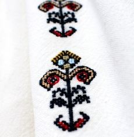
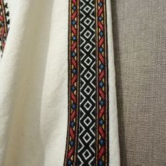
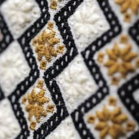

M Clothing Company
str.Columna 96, Chișinău
069010203
Costume populare din Moldova
M Clothing Company este o companie care coase ii la comandă.
Ia este parte din identitatea noastră, iar dragostea noastră
pentru cusut a deschis multe inimi și ne-a conectat cu mii de
femei și bărbați cu aceeași pasine din întreaga lume.
Specificul principal al costumului popular din zona Moldova este dat de
păstrarea unui număr mare de elemente străvechi. În comparaţie cu alte
zone folclorice ale României, formele arhaice de port s-au conservat aici
în mare măsură. La acest aspect au contribuit izolarea geografică a zonei,
puţinele căi de comunicaţie, dar şi existenţa unui patriotism local
dezvoltat, manifestat de oamenii acestor locuri.
Costumul moldovenesc păstrează elemente de tip general românesc, ca
de exemplu cămașa dacică încrețită la gât, cingători, sumane, cojoace
și opinci.
Portul moldovenesc femeiesc cu catrință sau prigitoare corespunde
ca structură și uneori chiar ca decor cu portul femeiesc ilir, cum
se poate vedea pe stela funerară de la Zagreb. Costumul femeii ilire
este asemănător cu cel dacic, având în plus bețele încinse peste catrință.
Cămașa iliră are manșete înguste, „brățară” la mână și guler, asemănătoare
cu piesele de port românești. Asemănarea între costumul dacic, iliric și
cel românesc constituie dovada că geneza portului românesc este daco-iliră.
Femei
Costumul femeiesc, prin bogăția de piese vestimentare, ca și prin decorul
bogat și variat, constituie principalul element de structură care domină
ansamblul costumului popular.
Costumul de lucru, de sărbătoare și de ocazie poate fi studiat pe vârste,
începând cu portul fetițelor până la zece ani, al fetelor până la căsătorie,
al femeilor tinere căsătorite și al celor până la 40 de ani.
După vârsta de 40 de ani, în concepția satului tradițional, femeia are
un port caracteristic, potrivit vârstei la care predomină o ornamentică
simplă, redată în culori sobre, închise la care negrul predomină, în
special în regiunea de munte.
Prezentarea costumului femeiesc incepe cu pieptănătura, care deosebea
pe fetele tinere de femeile căsătorite. Părul era împletit în două
cozi ce erau:
- lăsate pe spate
- se strangeau la ceafa
- în coc
- top
- coșărcuță
- gâțe
Fetele își împodobeau părul cu flori roșii sau cu busuioc.
În concepția și credințele poporului, busuiocul era floarea care
aduce noroc, de aceea era nelipsit de la această găteala.
Bărbați
Costumul popular moldovenesc bărbătesc, spre deosebire de cel
femeiesc, se caracterizează printr-un număr mai redus de piese,
printr-o cromatică sobră și o ornamentică mai simplă.
Piesele de port definitorii sunt:
- Cămașa
- Brâul
- Ițarii
- Bernevecii
- Căciula sau pălăria
Căciula ascuțită din pielicică de miel, neagră sau brumărie,
se folosea de către răzesi. Clăcașii purtau căciula aplecată
pe partea dreaptă, caciulile înfundate erau cele purtate de
către păstori. Pălăriile cu gang sunt specifice zonei Rădăuți,
iar cele cu borurile mari, asemănătoare cu cele mexicane,
denumite și pălării de cordun, de graniță în celelalte zone ale
Moldovei.
Piesele comune costumului bărbătesc și femeiesc sunt cingatorile,
nafrămile, cojoacele, sumanele, traistele, opincile și obielele.
Elemente
Cu mii de ani înainte de apariția scrisului, oamenii și-au
transmis informația prin simboluri. Inspirați de puterea
soarelui și a pământului, au creat un cod de semne pe care l-au
perpetuat până în zilele noastre prin toate manifestările lor
artistice și practice. Bazate pe principiile de bază ale
universului: echilibrul, regenerarea, ciclicitatea, ele sunt
mijloace de comunicarex atemporale.
| . |
|
|
|
Bobocul. Nimic mai firav și mai inocent decât un
boboc de floare! Acesta e semnul purității, al gingășiei
și curățeniei. De cele mai multe ori bobocii se brodau
pe iile purtate de fete tinere, visătoare, simbolizând
finețea și inocența.
|

|
|
Unul din cele mai bogate și răspândite simboluri, Pomul
Vieții semnifică legătura dintre cer și pământ,
armonizând materialul cu spiritualul.
|

|
|
Coloana e considerată unul din semnele primordiale
în arta populară, fiind printre primele semne incizate,
care au rămas să dăinuiască în ornamentica spațiului
carpato-danubiano-pontic timp de peste zece milenii.
|


|
Culori
Varietatea culorilor și modelelor cusute pe iile moldovenești ar putea
să te pună în încurcatură atunci cand vrei să-ți alegi ia potrivită.
De aceea e bine să știi că atât modelul de broderie, cât și culorile
cu care sunt făurite cusăturile iei au o semnificație aparte.
| Culoare |
Semnificație |
| Roșie |
Viața, dragostea, pasiunea și focul. Iile tradiționale brodate
cu roșu erau destinate să fie purtate mai ales de femeile
tinere, căsătorite de puțin timp. Energia și căldura
degajate de culoarea roșie, precum focul, semnificau puterea
dătătoare de viață, vitalitatea si iubirea. |
| Albastră |
Apa, energia și stabilitatea. Spre deosebire de tinerele soții,
care purtau ii de culoare roșie, femeile care au devenit mame
se îmbrăcau mai ales cu ii cusute cu albastru. |
| Galbenă |
Energia solara, bucuria și căldura. Un simbol al bogăției
pământului și rodniciei, al astrului dătător de viață și
al spicelor aurii. Iile tradiționale brodate cu galben
erau îmbrăcate în special de fetele tinere, nemăritate,
care purtau cu mândrie broderiile vesele în culori aprinse,
duminica, la hora din sat. |
| Verde |
Prospețimea și vitalitatea sunt reprezentate de această
culoare a naturii, un simbol al tinereții, veseliei și
al primăverii. Poate tocmai de aceea, iile cusute cu
verde crud sunt cel mai ades purtate de copile, în
combinație cu nuanțe pastelate de galben pai, bleu,
roz sau lila. |
| Portocalie |
O culoare vibrantă, fierbinte, sănătoasă, portocaliul
simbolizează energia, vitalitatea, aventura și o stare
bună de sănătate. Iile brodate cu această culoare erau
îmbrăcate cu mândrie de fetele tinere, aflate în căutarea
unui soț printre flăcăii chipeși din sat. |
| Albă |
Un simbol al purității și inocenței, albul este specific
broderiilor purtate de tinerele necăsătorite. Totusi,
această broderie este mai des întâlnită, fie în
combinație cu alte culori deschise, precum bej,
galben sau crem, fie alături de culori vii, precum
roșu sau albastru |
| Neagră |
Broderiile cusute cu fir negru erau purtate de femeile
în vârstă și cu un anumit statut social, ca simbol al
sobrietații, înțelepciunii și decenței. Un simbol al
eleganței, simplității și cinstei, broderia lucrată cu
fir negru este tot mai mult preferată de femeile care
își doresc o ie tradițională adecvată unor evenimente
speciale. |